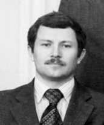

|  |
Born in Malaya Bugulma village, Tatar ASSR, USSR in 1949. Master degree received from the Gorky State University in 1973. In 1973-1977 worked in NIRFI. He worked in the Lab from 1977 to 1996 as experimentalist. His major contribution was achievement the sensitivity of the RAD spectrometerof near to the physical limit and development of gas analysis method [Refs. 57, 59 (1986)]. PhD degree was received in 1987. |